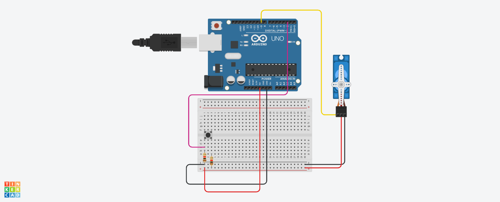

Internet vositalari tizimi fanidan amaliy vazifa:
Tugma bosilganda servoprivod 15 gradusga o’girilishi dasturini tuzing.

C++ (Arduino) kod:
2-topshiriq
Internet ilovalarni ishlab chiqish fanidan fanidan amaliy vazifa:
Yilda 12 oy berigan. Shu oylarni faslarga ajratish.
HTML:
JavaScript:
3-topshiriq
OYD va tarmoq dasturlash (C++, Java) fanidan fanidan amaliy vazifa:
Sport zalga turli yoshdagi mijozlar tashrif buyurishadi.
Foydalanuvchi zalga nechta mijoz tashrif buyurgani kiritganidan so‘ng
har bir mijozni yoshi so‘ralsin va yosh qiymati foydalanuvchi tomonidan kiritilsin.
Yakunda sport zalga tashrif buyurgan mijozlar soni, ularning eng kichik,
eng katta va o‘rtacha mijozlarning yoshi haqida ma’lumot beradigan dastur tuzilsin.